Práctica 5: Series de Fourier en tiempo continuo
Quijano Gutiérrez Luis Humberto
Contents
Objetivos
- Realizar gráficas de series de Fourier exponenciales y trigonométricas en tiempo continuo
- Manipulación de instrucciones en MATLAB
- Calculo númerico de los coeficientes de Fourier
Introducción
Las series de Fourier son una forma de representar señales y/o fórumas en una serie infinita de combinciones líneales de esta. A los componentes que forman la series se les llama coeficientes de Fourier. Hay varios métodos para obtener las series de Fourier, pero del que se le va hablar es el de exponencial compleja. La fórmula para obtener la serie mediante la exponencial compleja es la siguiente:
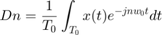
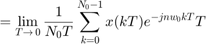
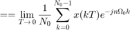
en donde 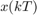$ es la k-ésima muestra de 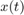, 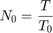 y 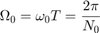
Entonces, para obtener los valores de los coeficientes 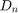 se requiere que 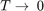, pero eso en la práctica no es posible, entonces lo que se hace es hacer que 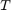 sea un número tan pequeño, sin ser cero, que no altere la fórmula y así poder determinar el comportamiento como si fuese cero. Quedando la sigueinte fórmula:
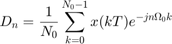
Problema 1
- Serie de Fourier con 4 armónicos *
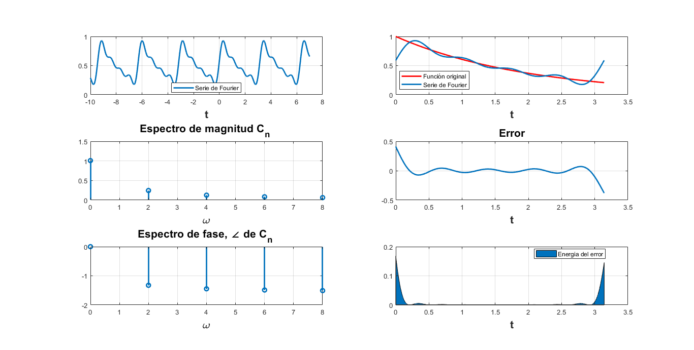
- Serie de Fourier con 15 armónicos *
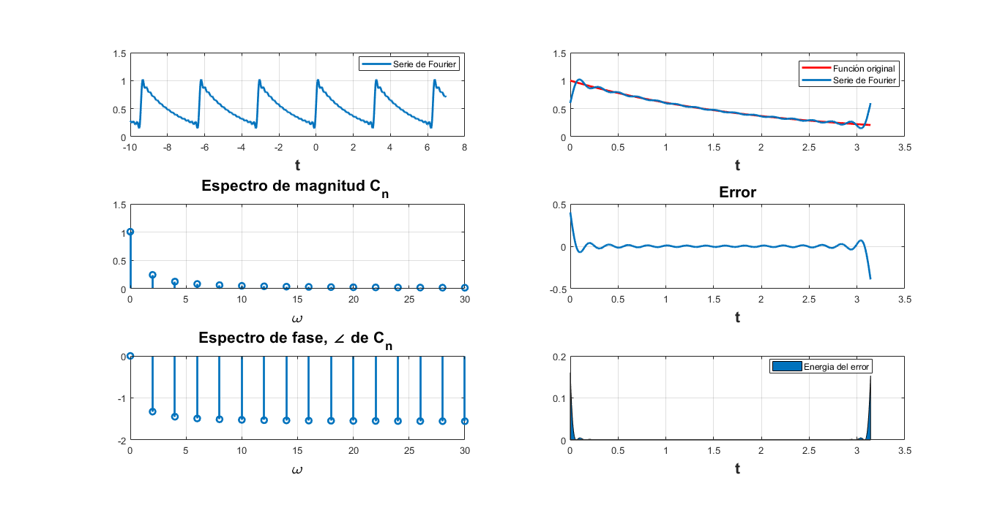
Problema 2
- Serie de Fourier con 4 armónicos *
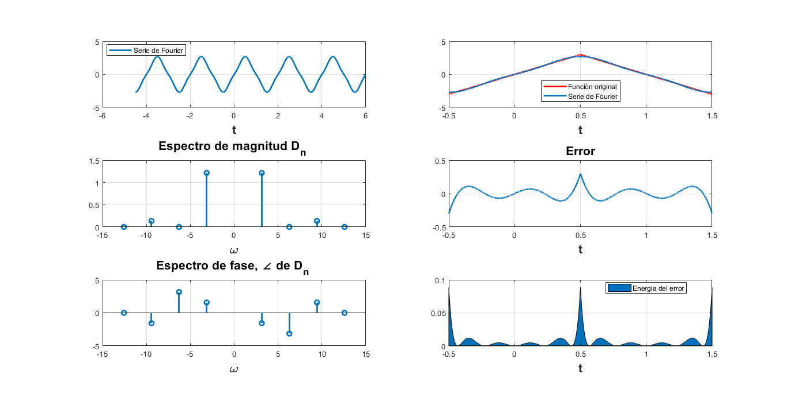
- Serie de Fourier con 15 armónicos *
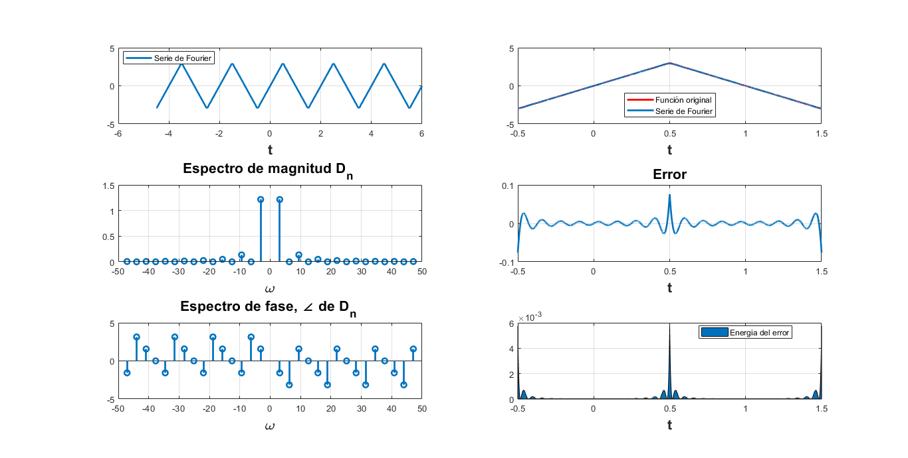
Problema 3
- Serie de Fourier con 4 armónicos *
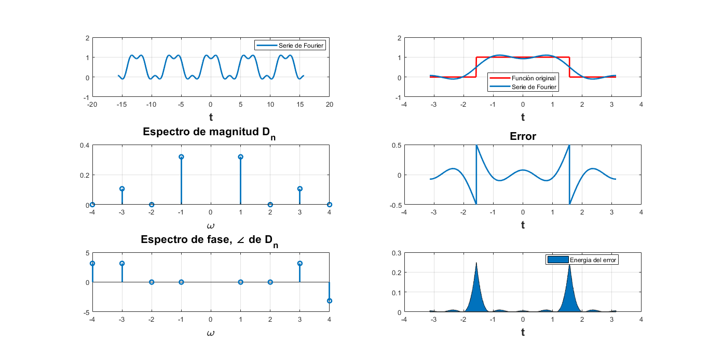
- Serie de Fourier con 15 armónicos *
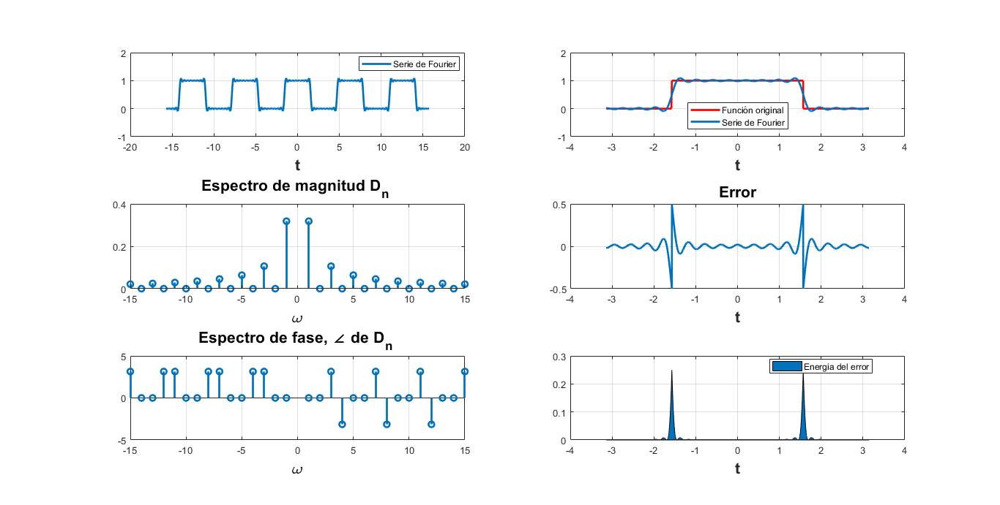
Problema 4
- Serie de Fourier con 4 armónicos *
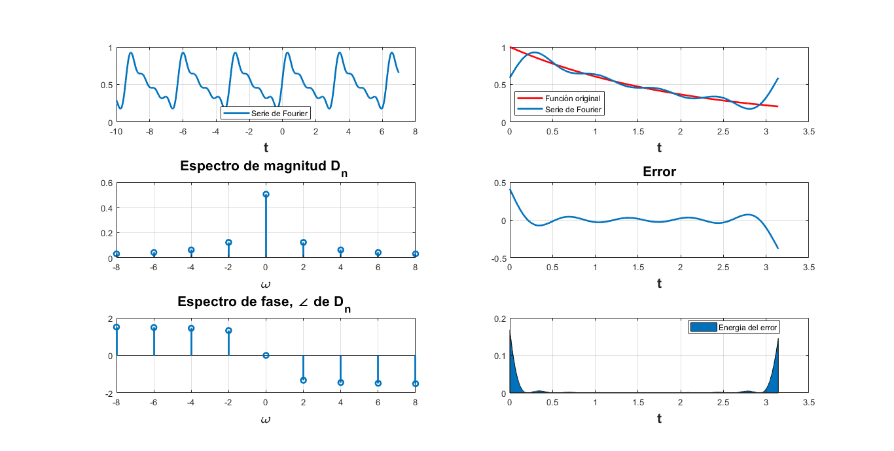
- Serie de Fourier con 15 armónicos *
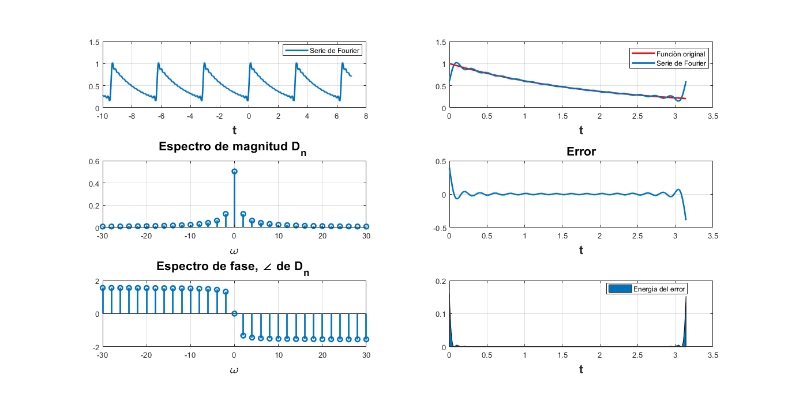
Problema 5
- Serie de Fourier con 4 armónicos *
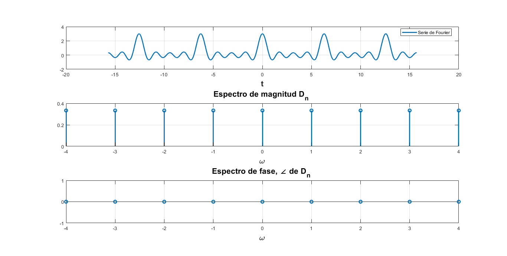
- Serie de Fourier con 15 armónicos *
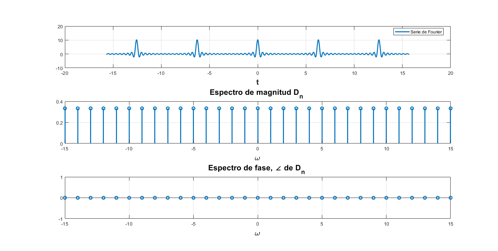
Problema 6
Problema 7
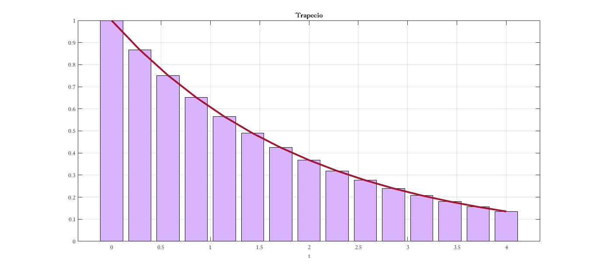
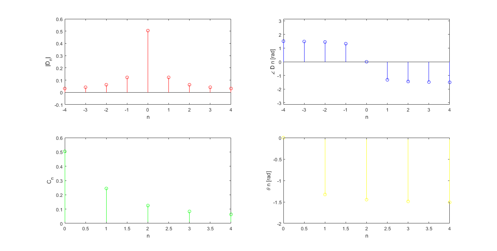
Referencias
Lathi, B. P., (2005). Linear Systems and Signals. EUA: Oxford university Press